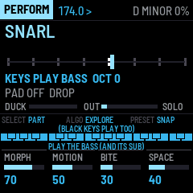

ABYSS ENGINE
ABYSS ENGINE is the bass half of JUNGLE OS, a drum & bass live rig of two M-VAVE FM-1s. Its bass has five models (FM NEURO, REESE, WOMP, HORN, SINE) and sixteen curated sounds for the drum & bass archetypes, from the rolling Reese and the hoover to the neuro growl, the jump-up womp, the foghorn and the 808, and STYLES that play each the way the genre does. A separate clean mono sub stays below it, untouched by width or distortion. There are rave, orchestral, glass and dark stabs, a four-voice evolving pad, a harmonic sequencer on a shared key with slides and locks, ducking from BREAK SURGEON's kicks, six scenes and the bass-safe NEURO PRESSURE master. It works alone, and with BREAK SURGEON on a second FM-1 over JUNGLE LINK.

New in 0.7.2: the FOGHORN as an FM sound, as the tutorials make it (stacked squares FMed by a sine three octaves up, an opening 24 dB filter, hard drive, reverb).
New in 0.7.1: the REESE, the HOOVER and the FOGHORN rebuilt after the classic patches (two saws weaving against each other; PWM saws on three octaves with a deep chorus and a dive onto the note; an octave-down horn through a 24 dB filter and hard drive).
New in 0.7: the bass. Five models (FM NEURO, REESE, WOMP, HORN, SINE/808), sixteen sounds, a phaser and a pitch envelope, width in the mid-bass only, and thirteen STYLES on ALGO: each brings its sound, its typical line, articulation and answers.
New in 0.6: DUET (hold SEQ): the machine answers the bar you played, moves its bass into the gaps of BREAK SURGEON's kicks and echoes your gestures. ENERGY (hold HOME: every step a level 1–4, shared with BREAK SURGEON) and TAPE DECAY.
New in 0.5: a step sequencer first. The white keys are always the 16 steps, the black keys the tracks, and the live tools sit on held buttons: FX, SONG, FILL, VARY, REC (live recording), STORE; SEL + LFO undoes, SEL + ENV redoes. Every step can have a trig condition (1:4, FILL, PHRASE END …).
New in 0.4: CALL & RESPONSE. SEL + SEQ sets the bass to a 4-bar form, A B A C: the call is the bass as you play it, B and C answer it, each with its own line and sound.
New in 0.2: the same controls as BREAK SURGEON (REC returns, ENV fills, LFO mutates, SEL + LFO undoes, SEL + white keys queue scenes), SELECT picks the part the keys play, and the screen shows what every key and encoder does, also with SEL or SAVE held.
Version 0.7.2. Not yet tested on a physical FM-1. It is tested in software: 620 engine checks, audio-regression renders, fm1-base's host simulator and fm1-emu, an instruction-level emulator that runs the real firmware file. Installing it is at your own risk; the installer can put M-VAVE's own firmware back. Back up first.
- Try it in the browser: the same code the FM-1 runs, with sound and Web MIDI. No FM-1 needed.
- Manual: every page, button and key.
- Install: from Chrome or Edge, with the FM-1 connected by USB.
- Download abyssengine-0.7.2.fwsc: for the command-line installer,
python3 base/tools/fm1_install.py abyssengine-0.7.2.fwsc. - Earlier versions: 0.7.1, 0.7.0, 0.6.0, 0.5.0, 0.4.0 (the 0.4 controls), 0.3.1, 0.3.0, 0.2.0 (the 0.2 screens), 0.1.0-dev (the first kit and controls).
- BREAK SURGEON, the rhythm half, and JUNGLE OS, both together.
- Source code on GitHub.
Built on fm1-base and felucca-bsp (MPL-2.0). ABYSS ENGINE is MPL-2.0. It is not affiliated with or endorsed by M-VAVE; M-VAVE and FM-1 are trademarks of their owners.